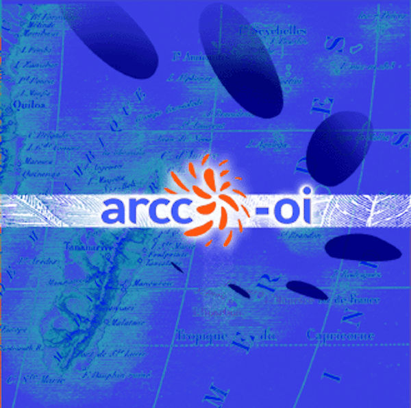

Culture, communication et dramaturgie dans l'océan Indien
Enfin mars avec son printemps. Mars arrive aussi avec le salon du livre de Paris. Pour tous ceux qui n'y sont pas allés, le lien du mois sera une présentation exclusive. En effet, sur le stand du ministère de l'Outre-Mer l'association réunionnaise communication et culture présentait quelques auteurs réunionnais au public du salon. L'ARCC, qui propose de nombreuses animations en métropole pour partager et découvrir la Réunion, en a profité pour annoncer l'ouverture de son site web. Je suis d'autant plus heureux de vous annoncer ce sites que j'ai participé à sa construction. Pour l'instant il y a quelques pages simples qui vous propose de découvrir en détail les activités et les écrits de l'association. On espère vraiment que ce nouveau site soit un point d'échange riche pour découvrir la culture de l'océan Indien comme l'est l'ARCC sur Paris.

Parmi les liens que l'on retrouve sur le site de l'ARCC, il y en a, comme le Théatre Vollard qui témoignent de partenariats qui vont au delà du web. La troupe du théatre Vollard qui est présente à Paris et à La Réunion présente un groupe (Vollard Combo) et une pièce (Séga Tremblad) et l'ARCC aime s'associer à leurs spectacles. La troupe est devenue une référence du théatre réunionnais et son site raconte tout depuis la création de la troupe en 1979.
Le site de l'ARCC a changé quelques rubriques avant de disparaitre en 2012 ce qui a fait disparaitre les pages dont je vous parlais ci-dessus mais la mes les activités culturelles réunionnaises se sont développées en métropole. Je vous en parle un peu dans La Réunion danse en métropole.